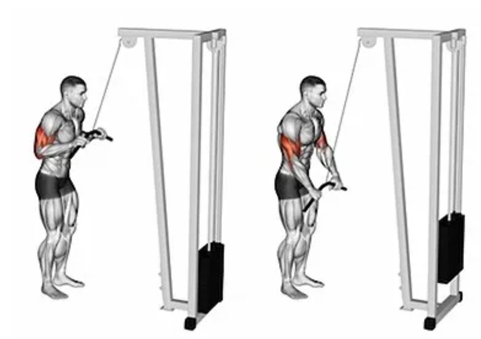

Bicepsový zdvih s velkou činkou
Výchozí poloha: Stoj mírně rozkročný, paže podél těla. Činku držíme podhmatem na šířku ramen.
Provedení: Kontrakcí bicepsů zvedáme činku po obloukovité dráze na úroveň ramenních kloubů. S pohybem činky vzhůru vydechujeme. Trup je fixován ve stabilní poloze. Sekundu setrváme na vrcholu pohybu s maximální kontrakcí bicepsů a pomalu vracíme zpět do výchozí polohy. Při návratu činky do spodní pozice nebo ve spodní pozici se zhluboka nadechujeme.
Bicepsový zdvih s jednoručkami
Výchozí poloha: Stoj mírně rozkročný, paže podél těla. Činky držíme podhmatem u boků.
Provedení: Kontrakcí bicepsů zvedáme střídavě jednoručky po obloukovité dráze na úroveň ramenního kloubu. Se zdviháním zátěže provádíme výdech. Chvíli setrváme na vrcholku pohybu a vracíme zpět s nádechem. Vystřídáme paže.
Stlačování kladky
Výchozí poloha: stoj mírně rozkročný, čelem ke kladce, ohnuté paže drží pevně osu kladky
Provedení: Kontrakcí tricepsů stlačujeme kladku dolů po mírně obloukovité dráze. V dolní pozici vydechneme, propneme paže a zatneme tricepsy. Kontrolovaně vracíme osu zpět a nadechujeme.
Tricepsové kliky na lavici
Výchozí poloha: V předklonu, jedna noha spočívá pokrčmo na lavičce, nepracující paže fixuje trup úchopem za lavičku, pracující paže paralelně se zemí (nadloktí)
Provedení: Kontrakcí tricepsu a s výdechem zvedáme činku po obloukovité dráze vzhůru až do propnutí paže. S nádechem vracíme zpět na úroveň kolene.
.